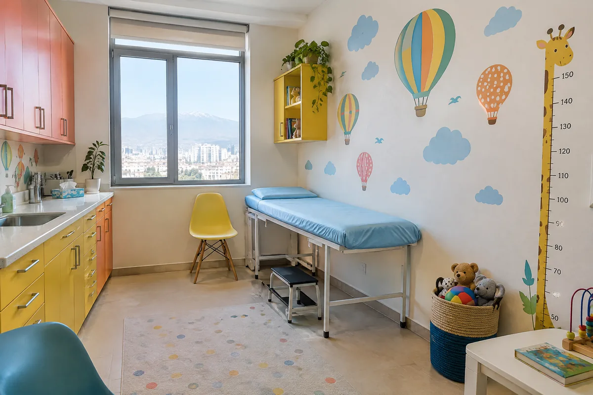
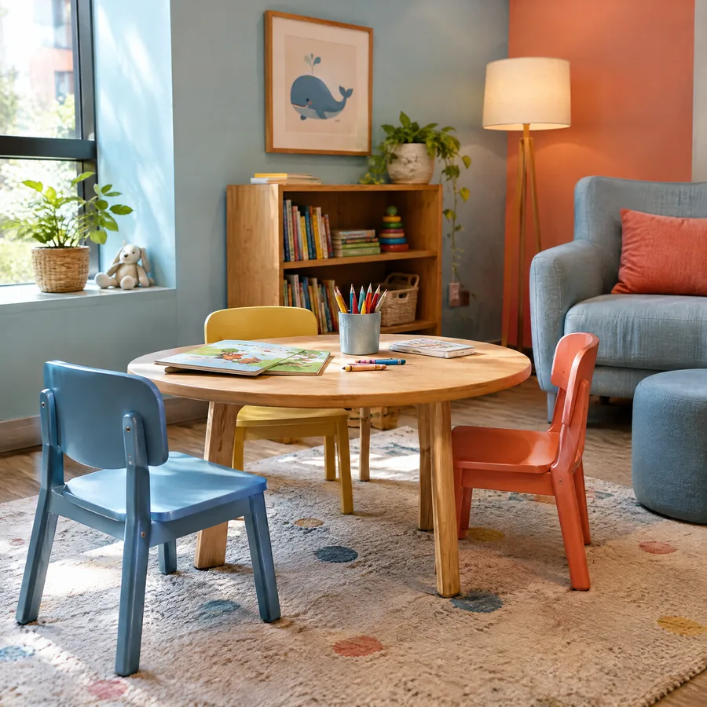

مراقبت نوزاد
معاینهی روزهای اول، زردی نوزاد و پیگیری وزنگیری.
مطب کودکان، تهران
معاینهی آرام و با حوصله، کنترل رشد و واکسنها، و اگر کودکتان بیمار شد، نوبت همان روز.

دکتر مریم کیانی بیش از دوازده سال است که نوزادان و کودکان را درمان میکند. معاینهها با حوصله انجام میشود و به همهی سؤالهای پدر و مادرها جواب داده میشود.
از روزهای اول تولد تا ۱۸ سالگی.
معاینهی روزهای اول، زردی نوزاد و پیگیری وزنگیری.
کنترل قد و وزن، و بررسی رشد ذهنی و حرکتی کودک در هر سن.
تزریق واکسنها طبق برنامهی کشوری و یادآوری نوبت بعدی.
مشاورهی شیر مادر، شروع غذای کمکی و کماشتهایی.
سرماخوردگی، تب، گوشدرد و عفونتهای شایع کودکان.
اگزما، حساسیت غذایی و خسخس سینه.
نوبت واکسن بعدی را از همینجا ببینید. در هر مراجعه، پزشک برنامه را با شما مرور میکند.

روز و ساعت را انتخاب کنید؛ پیامک تأیید برایتان ارسال میشود.
روز
ساعت
ابتدا یک روز را انتخاب کنید.
بله. هر روز چند نوبت برای کودکان بیمار خالی نگه میداریم؛ در بخش نوبتدهی، نزدیکترین ساعت را انتخاب کنید.
کارت واکسن کودک و اگر داروی خاصی مصرف میکند، نام داروها را همراه داشته باشید.
از روزهای اول تولد تا ۱۸ سالگی.
برای پیگیری و سؤالهای تغذیه بله؛ ولی کودک بیمار باید حضوری معاینه شود.